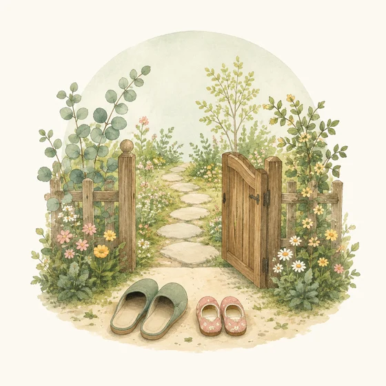

毎月の費用
0〜2歳児クラス
- 保育料
- 世帯の市民税額や保育時間区分などに応じて、市が決定
- 給食費
- 保育料に含まれます
- 父母会費
- 250円／月
市民税非課税世帯などは保育料が無償です。岩国市では、生計を一にする第2子以降の保育料も、条件を満たす場合に無償となります。

VISIT
清華保育園では、入園をご検討中の方の園見学を随時受け付けています。実際の保育の様子や園の雰囲気をご覧いただきながら、ご不明な点についてもご説明いたします。
REQUIREMENTS
令和8年度（2026年度）入園児を募集しています
FLOW
見学のご相談は園へ、正式な入園申請は自治体の窓口へ。
入園後の生活も、ご家庭と一緒に準備していきます。
お電話またはお問い合わせフォームからご予約ください。園の雰囲気をご覧いただき、生活や費用についてご相談いただけます。
岩国市にお住まいの方は、市保育幼稚園課・総合支所・支所などへ必要書類を提出します。市外の方は、お住まいの自治体へご相談ください。
自治体の利用調整により、入園の可否が通知されます。園への見学予約やお問い合わせだけでは、入園申込みは完了しません。
ご家庭での生活、食事やアレルギー、保育時間を相談します。持ち物を確認し、お子さまの様子に合わせて慣らし保育を進めます。
岩国市での手続き
2・3号認定の申請
ご家庭の状況によって追加書類が必要です。最新の様式・記入例・提出書類チェックリストは、市の案内をご利用ください。
岩国市の入園手続き・申請書類を見る（別タブ）手続き・制度の確認日：2026年9月28日。市外にお住まいの方は、お住まいの自治体の案内をご確認ください。
FEES
毎月の費用と、入園時・利用時などに必要な費用をご案内します。
毎月の費用
市民税非課税世帯などは保育料が無償です。岩国市では、生計を一にする第2子以降の保育料も、条件を満たす場合に無償となります。
毎月の費用
副食費は、所得やきょうだいの状況により免除される場合があります。主食はご家庭からお持ちいただきます（月2回の米飯給食の日を除く）。
保育料の無償化と、給食費・活動費などの負担は別の取り扱いです。対象条件は岩国市の案内をご確認ください。
在園児以外のお子さまが対象です。
利用は週3日・月12日以内です。受け入れ状況、利用時間、申込みについては、事前に園へご相談ください。
18:00〜19:00の利用は無料です。利用をご希望の方は園へお申し出ください。
リトミック（全クラス）、英語・サッカー教室（4・5歳児）の指導料は全額園負担です。
活動の内容を見るGETTING READY
主な持ち物をまとめました。必要な種類や枚数は年齢・季節によって異なります。
ご購入の前に、園へご相談ください。
どの年齢でも
0〜2歳児
お子さまの今の様子に合わせて、必要なものを確認します。
3〜5歳児
お名前はひらがなで。持ち物の見えやすいところに記入し、お洗濯で薄くなっていないかご確認ください。
着替えは毎日カバンに。衣類は毎日持ち帰ります。翌日も必要な着替えを入れてお持ちください。
寝具は季節に合わせて。敷布団は園のものを使います。タオルケットや毛布などは、園からの案内に合わせてご準備ください。
FAQ
入園前の気がかりや、
園生活の準備についてお答えします。
はい、平日に随時受け付けています。園の行事等によりご案内できない時間帯もありますので、事前にお電話（0827-63-1222）でご予約をお願いいたします。お子さまと一緒にお越しいただけます。
入園当初は、お子さまの様子や個人差に応じて保育時間を調整し、ご家庭と相談しながら少しずつ園生活に慣れていけるようにします。期間やお迎えの時間は個別に相談しますので、復職日が決まっている方も入園前にお知らせください。
はじめての園生活で気になることは、小さなことでもお聞かせください。ご家庭での様子を伺い、お子さまに合わせて保育時間などを相談しながら進めていきます。
はい、今のお子さまの様子を入園前にお知らせください。3歳未満のお子さまの準備品には紙おむつがあり、3〜5歳児も着替えを用意していただきます。必要な枚数などは個別にご相談ください。
3〜5歳児は制服・制帽で登園し、園では体操服・体操ズボン・遊び着に着替えます。0〜2歳児の服装は自由です。動きやすく、トイレのときに脱ぎ着しやすい服と、活動しやすい運動靴をご用意ください。制服などの購入については園へお問い合わせください。
見えやすいところに、ひらがなではっきりとお名前を書いてください。まだ文字に慣れていないお子さまには、目印になる絵などを添えると自分のものを見つけやすくなります。主な持ち物は入園前の準備をご覧ください。
敷布団は園のものを使用します。タオルケットや毛布など、掛けるものは季節や年齢によって異なりますので、園からの案内に合わせてご用意ください。
0歳児は離乳食、1・2歳児は主食を含む給食を園で用意します。3〜5歳児は副食を園で用意し、ごはんまたはパンをご家庭からお持ちいただきます。月2回の米飯給食もあります。離乳食はご家庭と様子を伝え合いながら進めます。給食にかかる費用はこちらをご覧ください。
医師の指示に基づき、除去食や代替食に対応しています。診断書などの必要書類や食事の進め方について、入園前の面談でご相談ください。
保護者アプリ「KidsView（キッズビュー）」で、連絡帳のやりとりや欠席・遅刻の連絡ができます。ご家庭での様子や、気になることもお知らせください。KidsViewのご案内はこちらをご覧ください。
空きがあれば年度途中の入園も可能です。空き状況は当園にお電話いただいてもお答えできます。正式な申込みや期限については、入園までの流れと、お住まいの自治体の案内をご確認ください。
朝の登園時は、園門の前で保育士が直接お子さまをお迎えします。園内まで入らずに、お子さまをお預けいただけます。
駐車場は園から20m先にあります。登降園の際は園門前に停めていただけます。
CONTACT
見学のお申し込みやご質問はこちらからどうぞ
清華保育園（以下「当園」）は、お問い合わせフォーム等を通じてお預かりする個人情報について、以下の方針に基づき適切に管理いたします。
お問い合わせ先：清華保育園 TEL 0827-63-1222